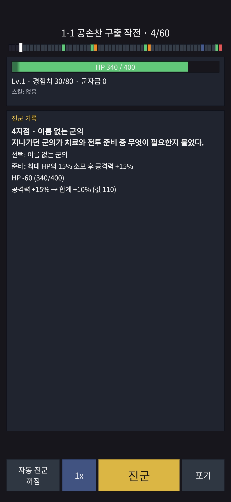
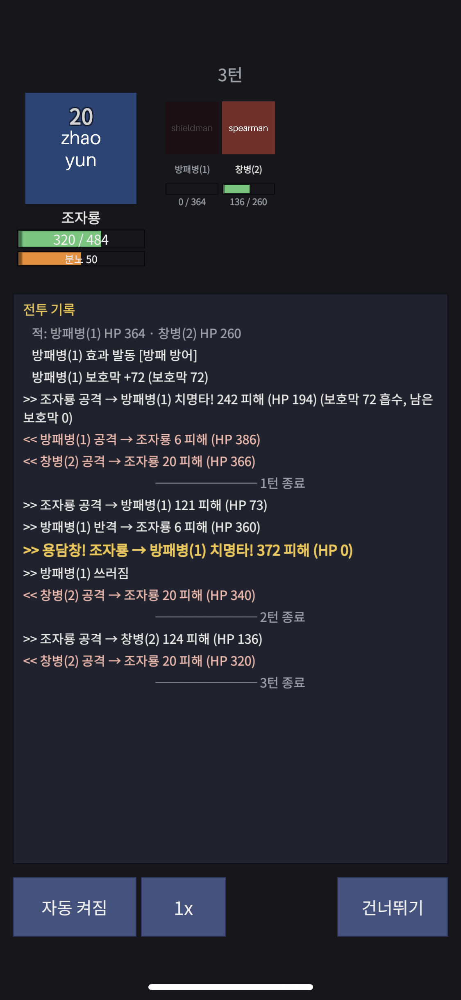

작업 목표
지난 단계까지 인증, 계정, 원격 설정, 결제가 플랫폼에 갖춰졌다. 이번 단계의 목표는 그 위에 첫 게임의 핵심 루프를 올리는 것이었다. 전투가 돌아가고, 60지점 원정 런이 서버에서 관리되며, 폰에서 한 판을 끝까지 플레이할 수 있는 상태. 장비·상점·광고는 다음 단계로 두고, 이번에는 "게임이 재미있는가"를 가장 빨리 확인할 수 있는 최소 범위에 집중했다.
작업 결과
여섯 번의 작업 단위를 거쳐 전투 엔진, 런 라이브러리, 서버 호출, 클라이언트 화면이 모두 연결됐다. 두 기기에서 첫 스테이지를 플레이해 한 번은 클리어하고 한 번은 패배했다.


환경 골격, 전투 엔진, 얇은 흐름, 런 서버, 런 화면. 모두 CI를 통과하고 병합됐다.
.NET 테스트 1,374개와 Unity 에디터 테스트 228개. 전투 규칙, 런 규칙, 서버 호출, 화면 로직을 덮는다.
전투 102개와 런 16개. 같은 입력이 서버, 에디터, Android, iOS에서 같은 로그를 내는지 확인한다.
게임 범위, 전투 모델, 테이블 형식, 런 규칙, 화면 구조까지 이유와 함께 기록했다.
참고작의 전투 로그를 먼저 분석했다
게임 장르는 카피바라 고! 스타일의 텍스트 로그라이크 런 RPG로 정했다. 지점을 하나씩 넘기며 운, 발견, 선택, 전투가 섞여 나오고, 레벨업마다 스킬을 고르며, 영구 성장은 런 밖에서 쌓는 구조다. 설계를 머릿속 기억으로 하지 않기 위해 참고작을 직접 플레이하며 전투 로그를 기록했고, 그 기록에서 전투 규칙을 역산했다.
피해에 변동폭이 없었다
같은 적에게는 매 타 같은 피해가 들어갔다. 난수는 치명타, 연타, 반격, 회피 같은 발동 판정에만 쓰인다는 뜻이다. 이 관찰이 전투 엔진을 단순하게 만들었다.
분노는 추가 타였다
처음에는 분노 스킬이 일반 공격을 대체한다고 가정했지만, 로그를 다시 보니 같은 턴에 일반 공격 뒤 추가로 나갔다. 구현 중간에 발견해 규칙을 고쳤고, 골든 벡터를 한 번 다시 만들었다.
스킬은 효과 목록이다
스킬 하나는 "언제(훅), 무엇을(액션), 얼마나" 묶음의 목록이다. 장수 스킬, 런 중 얻는 임시 스킬, 적의 특수 패턴이 전부 같은 표현을 쓰므로 전투 코드를 한 번만 짜면 된다.
서버와 폰이 같은 답을 내는 전투 엔진
런 중간 전투는 폰에서 계산하고 서버는 검증만 한다. 보스전은 서버가 계산한다. 어느 쪽이든 결과가 같아야 하므로 전투 엔진은 부동소수점을 전혀 쓰지 않는 정수 전용 라이브러리로 만들었다. .NET 서버와 Unity IL2CPP 빌드에서 같은 입력이 같은 로그를 내는지가 이 단계의 기준이었다.
시드 · 테이블 · 능력치
같은 시드, 같은 테이블 버전, 같은 효과 목록이면 결과가 같다.
정수 전용 시뮬레이션
턴, 분노, 연타·반격·회피, 상태이상, 효과 훅을 고정 순서로 처리한다.
정수 배열 로그
문자열 없이 이벤트 코드와 숫자만. 해시 하나로 동일성을 비교한다.
재생만 하는 화면
클라이언트는 로그를 읽어 보여 줄 뿐 계산하지 않는다.
부동소수점을 빌드 단계에서 막는다
"쓰지 말자"는 약속은 깨진다. 컴파일된 전투 라이브러리를 메타데이터 수준에서 검사해 float·double, 부동소수점 명령, Random·DateTime·Math 호출이 하나라도 있으면 테스트가 실패하게 했다. 검사기 자체도 56가지 위반 사례를 담은 픽스처로 검증한다.
골든 벡터로 기기에서 확인한다
시드와 구성마다 기대 결과와 로그 해시를 파일로 두고, .NET 테스트와 Unity 에디터, 그리고 폰의 디버그 버튼에서 같은 파일을 돌린다. Android 16과 iOS 16 기기에서 전투 102개, 런 16개가 모두 일치했다. 이 확인이 끝나기 전까지는 어떤 보상도 전투 결과에 의존하지 못하게 규칙으로 막았다.
예산은 5밀리초였다. 10,000판을 돌려 재서 여유가 100배 넘게 남았다.
참고작의 스킬 목록을 삼국지 세계관으로 옮겼다. 투창, 화살, 위압, 기습, 용담창, 연격.
중독·출혈·화상(중첩 지속 피해), 경직·기절(행동 건너뜀). 연속 두 번 건너뛰지는 않는다.
전부 만들기 전에 폰에서 한 줄을 먼저 뚫었다
원래 순서는 전투 엔진 → 스킬 → 런 서버 → 화면이었다. 그러면 화면은 셋째 주에나 나온다. 전투 엔진 코어가 끝난 직후, 인트로 → 게스트 로그인 → 로비 → 전투 → 로비만 잇는 얇은 흐름을 끼워 넣어 폰에서 먼저 돌렸다. 더미 아트와 코드로 만든 UI뿐이었지만, 이 한 줄이 이후 모든 화면의 뼈대가 됐다.
로그를 화면 단계로 바꾸는 층
전투 로그를 "무엇을, 어떤 순서로, 몇 밀리초 동안 보여 줄지"로 바꾸는 순수 C# 층을 두고 Unity와 분리했다. 엔진 참조 없이 에디터 테스트로 단계 수와 총 시간을 고정한다. HP는 더하지 않고 이벤트에 실린 값을 그대로 쓴다.
더미 아트 교체 규약
장수·적·아이템 ID가 곧 그림 파일 이름이다. 스크립트가 테이블을 읽어 없는 ID만 색 블록 더미를 만들고, 나중에 같은 이름의 PNG를 덮어쓰면 씬도 프리팹도 깨지지 않는다. 남은 더미 목록은 출시 전 검사 항목이다.
처음 기기에서 잡은 것들
로비가 첫 호출을 건너뛰는 정수 넘침 버그는 에디터 테스트가 로비 경로를 안 타서 폰에서야 드러났다. 한국어 폰트, 세이프 에어리어, 오프라인 재시도도 이때 확인했다.
60지점 원정을 서버가 관리한다
첫 장은 60지점짜리 스테이지 셋이다. 지점마다 운(대운·길운·불운), 발견, 물음표 선택, 룰렛, 전투 중 하나가 나오고, 중간보스가 25·40지점, 보스가 60지점에 고정된다. 나머지 42지점은 출정마다 섞인다. 이 규칙을 전투 엔진과 같은 제약(정수 전용, 외부 의존 없음)의 순수 스텝 함수로 만들어 서버, 클라이언트, 시뮬레이터가 같은 코드를 쓴다.
배치 생성과 저장
Run고정 슬롯 18개를 먼저 놓고 구간별 사건 묶음을 섞는다. 첫 전투는 6~9지점, 전투 연속은 최대 2회. 조건을 못 맞추면 256번까지 다시 섞고, 그래도 안 되면 검증된 예시 배열을 쓴다. 만든 배치는 저장해 두고 다시 계산하지 않는다.
비밀 시드와 공유 시드
Server운과 룰렛을 뽑는 시드는 서버만 안다. 전투 시드는 클라이언트와 공유한다. 클라이언트가 받는 상태에는 앞으로 나올 사건이 들어 있지 않아 다음 운을 미리 알 수 없다.
전투 보고는 해시가 같을 때만
Server일반 전투는 폰이 계산해 로그 해시를 보고한다. 서버가 같은 입력으로 다시 계산해 해시가 정확히 같을 때만 받아들이고, 다르면 거절하고 서버 계산 전투(일기토)로 바꾼다. 중간보스와 보스는 처음부터 서버가 계산한다.
잃어버린 응답과 재접속
Client사용자 행동마다 요청 ID를 하나 만들고 재시도에는 같은 ID를 쓴다. 서버는 ID당 한 번만 적용한다. 앱을 끄고 다시 켜면 서버 상태로 같은 선택창이나 전투로 돌아간다. 비행기 모드로 끊었다 다시 시도해도 지점은 한 번만 넘어갔다.
자동 플레이어로 밸런스를 잰다
Tools스킬을 고르고 위험을 피하는 자동 정책으로 10,000판을 돌렸다. 영구 성장 없이 첫 스테이지 클리어율 14%, 대부분 25·40지점 중간보스에서 끝난다. 이 숫자는 조정 목표가 아니라 기준선이고, 진짜 목표인 "몇 번째 출정에 첫 클리어"는 성장 시스템이 붙은 뒤 계정 단위로 잰다.
폰에서 처음 플레이했다
런 화면은 지점 진행, 사건 카드, 선택 패널(물음표·룰렛·레벨업·신화 상자·강화), 전투, 결과로 이어진다. 소셜 로그인과 계정 패널도 이때 붙였다. Galaxy A16에서 첫 스테이지를 두 번 플레이해 한 번 클리어, 한 번 패배했고, iPhone X에는 처음 설치해 벡터 검사와 런, Google·Apple 연결과 계정 삭제를 확인했다.
플레이 소감
"런과 전투가 이렇게 빨리 완성돼서 놀랐다. 참고작의 다음 날 버튼과 전투 버튼을 누르는 재미가 잘 구현됐다."
사람이 고르면 자동 정책보다 훨씬 잘 깬다. 첫 출정에 클리어가 나왔으니 다음 단계 밸런스는 올리는 방향이 될 수 있다.
바로 나온 피드백
- 불운인데 "+9%"로 보였다 → 누적만 보여 주던 표시를 "−5% → 합계 +9%"로 고쳤다.
- 텍스트가 정신없이 흘러간다 → 레벨업·상자·전투 전에 탭을 기다리고 속도를 늦췄다.
- 스킬 설명이 없고 등급이 섞여 나와 늘 최고 등급을 고른다 → 다음 단계.
- 60지점은 튜토리얼로 길다 → 30지점 선행 스테이지를 다음에 넣는다.
만들면서 알게 된 것
관찰 데이터가 가정을 이긴다
분노 규칙을 "대체"로 가정하고 구현했지만 참고작 로그는 "추가"였다. 로그를 들고 있었기에 계획 검토 단계에서 바로 잡혔다. 설계는 기억이 아니라 기록에서 나와야 한다.
화면은 늦게 나오면 피드백도 늦다
얇은 흐름을 둘째 작업 단위에 끼워 넣은 덕에 로그 형식의 결함과 폰트·레이아웃 문제를 스킬 풀을 만들기 전에 잡았다. 마지막 날의 피드백 네 개도 화면이 있었기에 나왔다.
깨끗한 사본 검증은 비싸지만 잡는다
커밋마다 깨끗한 사본에서 다시 빌드하는 규칙이 분석기 오류(증분 빌드가 건너뜀)와 누락된 기대값을 잡았다. 대신 Unity 재임포트와 IL2CPP 빌드로 하루가 길어졌다. 다음 단계부터는 그룹 마지막 커밋만 깨끗한 사본에서 검증하고 출시 직전에 다시 전부로 돌린다.
표시가 규칙을 오해하게 만든다
불운 −5%는 규칙상 맞게 적용됐지만 화면은 누적 +9%만 보여 줬다. 플레이어는 규칙이 아니라 화면을 본다. 변화량을 먼저, 합계를 뒤에 쓰는 것으로 고쳤다.
디스크는 테스트가 먹는다
스모크 테스트가 새 Docker 볼륨을 매번 만들어 456개, 77GB가 쌓였다. 빌드 산출물과 Xcode 캐시까지 합쳐 110GB를 비웠다. 반복 검증 환경에는 정리 주기가 필요하다.
백업은 데이터가 생길 때
개발 DB 백업을 배포 전 단계로 잡았다가, 그 DB에 버려도 되는 테스트 계정뿐이라는 점을 보고 미뤘다. 외부 테스터 데이터가 생기는 CBT 전 게이트로 옮겼다.
설계는 대화로, 구현은 AI 에이전트가, 확인은 사람이
이번 단계는 세 겹으로 돌아갔다. 게임 설계와 결정은 대화에서 정하고, Claude Code가 계획을 내면 대화에서 검토해 승인한 뒤 구현하게 했다. 커밋 그룹마다 보고를 받아 검토했고, 기기 세션과 배포 명령은 사람이 실행했다. 보고와 승인문은 영어로, 운영 명령은 한국어 단계별 안내로 바꿔 사람이 따라 하게 했다.
AI 에이전트가 맡은 일
- 전투·런 라이브러리, 서버 모듈, 클라이언트 화면 구현
- 참고작 로그 분석을 바탕으로 한 규칙 제안과 검증 질문
- 테이블·골든 벡터·시뮬레이터·스모크 테스트 작성
- Unity 배치 빌드, Xcode 프로젝트 생성, 기기 로그 수집
- 깨끗한 사본 검증, PR 작성과 CI 감시
- 결정 기록과 결과 문서
사람이 직접 한 일
- 게임 범위와 42개의 결정(디아블로식 보류, 광고 연기, 백업 게이트 등)
- 참고작 플레이 기록과 1장 기획서
- 계획 검토와 승인, 그룹 보고 검토
- 개발 서버 배포·마이그레이션·플레이어 초기화·설정 적용
- 두 폰에서 첫 플레이와 피드백
- Xcode 서명, Firebase·Apple 콘솔 확인
재미있는지 확인할 수 있는 최소한을 만들었다
장비도 상점도 광고도 없지만, 전투가 돌아가고 런이 서버에서 관리되며 폰에서 한 판을 끝까지 할 수 있다. 가장 먼저 확인해야 할 "핵심 루프가 재미있는가"에 첫 답이 나왔고, 그 답이 다음 단계의 방향을 정했다.
이번 단계의 진행 순서
참고작 전투 로그 분석 · 게임 범위 결정
↓
정수 전용 전투 엔진 코어 + 골든 벡터
↓
얇은 흐름: 인트로 → 로그인 → 로비 → 전투 (폰)
↓
상태이상 · 스킬 풀 · 적 패턴 · 기기 벡터 검증
↓
원정 런 라이브러리 · 서버 호출 · 배포
↓
런 화면 · 소셜 로그인 · 두 폰에서 첫 플레이전투 엔진이 가장 까다로운 조각이라 화면 없이 먼저 굳히되, 바로 뒤에 얇은 흐름을 넣어 화면이 너무 늦지 않게 했다. 이 순서 덕에 서버 문제와 화면 문제가 섞이지 않았다.
사람이 직접 플레이한 두 판 중 한 판을 클리어했다. 자동 정책의 14%보다 훨씬 높다.
3줄 요약
- 부동소수점을 빌드 단계에서 막은 정수 전용 전투 엔진과 60지점 런 라이브러리를 만들어, 서버·에디터·Android·iOS에서 같은 입력이 같은 로그 해시를 냈다.
- 클라이언트는 전투와 런을 계산하지 않고 서버가 준 로그와 상태를 재생만 하며, 일반 전투는 폰이 계산해 보고하되 서버가 해시가 같을 때만 받아들인다.
- 두 폰에서 첫 스테이지를 직접 플레이해 클리어했고, 그 자리에서 나온 피드백(표시, 속도, 스킬 설명, 튜토리얼 길이)이 다음 단계의 작업 목록이 됐다.
다음 작업
장비 · 승급 · 상점
서버 → 화면장비 수치와 드롭, 강화·합성·돌파, 골드로 올리는 승급과 특성, 옥 상점을 붙인다. 계정 단위 시뮬레이터로 "3~5번째 출정에 첫 클리어"를 맞춘다. 스킬 설명과 같은 등급 3택1도 이때 넣는다.
천하무쌍 · 2·3장 · 튜토리얼
콘텐츠장수 8명 사다리, 2·3장 스테이지, 30지점 튜토리얼 스테이지. 생성 아트로 더미를 교체하고 아이콘·말풍선으로 런 화면의 연출을 채운다.
광고 · 스토어 · 출시 게이트
출시 전보상형 광고와 서버 검증, 스토어 레코드와 테스트 구매, Apple 토큰 폐기 설정, 개발 DB 백업을 CBT 전에 끝낸다.